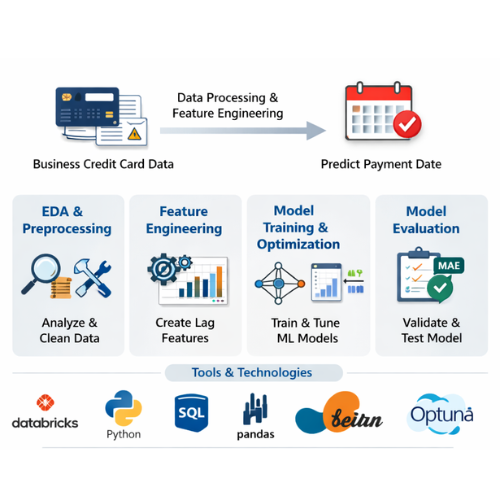

Fintech · Data Scientist · 2025–2026
Payment-Date Prediction
Business clients spend on their corporate cards during the month and then receive a statement. Knowing in advance who will pay late, or not at all, lets the risk and collections teams act before it happens.
1.86 d
mean absolute error
2 years
of account statements
Bayesian
hyperparameter tuning (Optuna)
Deployed
on Databricks
01Problem
Predict the number of days each client will take to pay its statement, so preventive actions can target clients likely to pay late or default.
02Data
- All account statements from the last two years
- Amount owed, amount paid and payment date
- Company characteristics: size, country, income and more
03Approach
- EDAExplore distributions and payment behavior.
- PreprocessMissing values and data types.
- Feature engineeringLag variables, variable interactions, numeric encoding.
- Model selectionTrained several ML models on days-to-pay and kept the lowest MAE.
- TuneBayesian hyperparameter optimization with Optuna.
- Validate & deployTested, validated and deployed.
04Results
The final model predicts the payment date with a mean absolute error of 1.86 days.
Synthetic points generated with an error of about 1.86 days, to show how that MAE looks. Real predictions are confidential. Dots on the dashed line are perfect predictions.
Same synthetic data: most predictions fall within ±2 days (highlighted).
05Visuals
